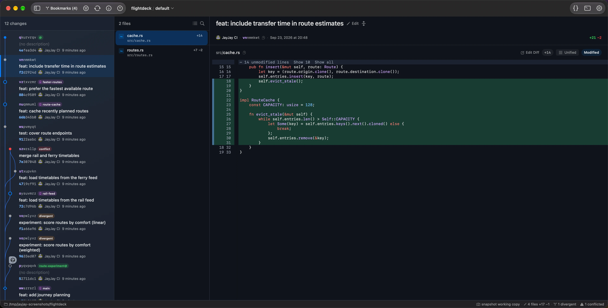
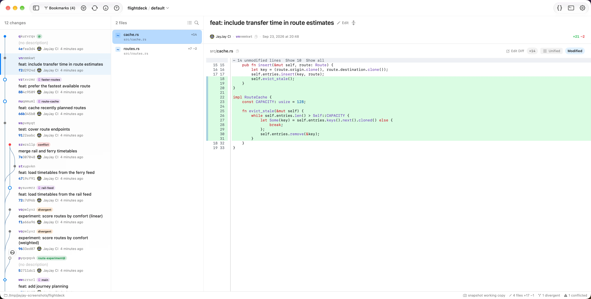

graph
Lane-based DAG
Fork/merge lanes with bookmark, tag, conflict, and divergent markers. Highlighted shortest change-ids; revset filtering with preset chips; immutable-aware menus.
A fast, keyboard-first client for Jujutsu. The change graph, diffs, splits, and conflicts — in one window, built on jj-lib in Rust.


Fork/merge lanes with bookmark, tag, conflict, and divergent markers. Highlighted shortest change-ids; revset filtering with preset chips; immutable-aware menus.
Histogram diff, tree-sitter highlighting, intraline changes, context collapsing, background preloading, and rich previews for Markdown, notebooks, CSV/TSV, SARIF, and binary plists.
Shift-click two changes for a PR-style diff between them — or compare the two versions of a divergent change. Full file navigation included.
Select files, hunks, or individual lines and extract them into a new change. Mark files reviewed, then split.
Step through changed files like a PR. Space marks one reviewed; tick them off, then split the selected files into a clean change.
Replay every snapshot of a change over time, with filtering and restore — jj's superpower, made visible.
Drag a bookmark onto any change to move it, with a live drop preview. Per-remote sync state (ahead / behind / diverged), forget stale or deleted bookmarks, auto-track on fetch, and diff a bookmark against its base.
One GitHub PR or GitLab MR per change in a linear stack, with dependent bases. Editable, AI-named branches; re-run to update them.
Use Ours / Use Theirs inline, or open the editor merge tool via jj resolve. Divergent detection.
Fuzzy-search ~35 actions; run raw jj with an ! prefix and inline output — no terminal needed.
VS Code, VSCodium, Zed, Xcode, Vim · Terminal, iTerm2, Ghostty · AI commit messages via Codex, Claude, or Apple Intelligence.
Toggle unified or side-by-side, browse files as a tree, and read tree-sitter syntax highlighting with intraline change highlights. Markdown, notebooks, CSV/TSV, SARIF, and binary plists get rich previews when raw text is not enough.


Walk your working copy file by file. Space sets a per-file review checkbox that survives restarts and only clears when content changes. Then split the selected files into a clean change.


Pick hunks or individual lines from any file in the change, then split exactly that selection into a clean child — line-by-line control across your whole working copy.


Right-click the tip of a linear stack → Create / Update Stacked PRs. JayJay names a branch per change — editable, or suggested by Apple Intelligence — pushes them, and opens one GitHub PR or GitLab MR per change with dependent bases. Re-run any time to update.
* Needs the GitHub gh or GitLab glab CLI installed.


Shift-click any two revisions in the DAG — two bookmarks, a PR branch and its base, or any two changes — to see exactly what moved between them. Syntax-highlighted, with file-by-file navigation. Got a divergent change? Right-click it and Compare Divergent Versions to diff the two versions of the same change-id and decide which to abandon.


Conflicted files get a red indicator and a resolution bar — one click for Use Ours / Use Theirs, or open the merge editor in VS Code or Zed via jj resolve.


Every snapshot of a change over time, with filtering and one-click restore — jj's hidden superpower, made visible. Undo a rebase or recover lost work without touching the op log by hand.


Hit ⌘ ⇧ P and fuzzy-search any operation. Type help split to discover features, or prefix with ! to run raw jj commands with inline output.


Every feature, in detail → read the full guide.
Requires macOS 26 or later. Apple-silicon, notarized, no telemetry.
# 1 · install (or download the .app) $ brew install --cask hewigovens/tap/jayjay # brew trusts this cask the first time # 2 · open a repo (or File → Open in the app) $ jayjay ~/my-project # 3 · then work — all keyboard-driven browse · diff · split · commit
Jujutsu has a better model than git — but most GUIs either think in git branches or run a web app in a shell. JayJay started from one question: why isn't there a true native client that speaks jj?
So it's opinionated and fast: one native way to do each workflow — changes, bookmarks, mutable history — the way jj intends. Git LFS, submodules, and colocated Git repos work out of the box. No subscription. No telemetry. No surprises.
JayJay is 100% free, built by a developer for developers. Every detail matters — down to a hidden easter egg. Can you find it?
A native macOS GUI for Jujutsu (jj) — the version control system that reimagines the git model with mutable history, changes instead of commits, and bookmarks instead of branches. Built with Rust (wrapping jj-lib directly, no CLI scraping) and SwiftUI.
Yes — JayJay is a full-featured native macOS jj GUI: DAG visualization, unified + side-by-side diffs with tree-sitter highlighting, interdiff, diff edit mode, file annotate, one-click conflict resolution, and every common jj operation (squash, split, absorb, revert, merge, duplicate, describe, abandon) without memorizing flags.
brew install --cask hewigovens/tap/jayjay is the easiest path — Homebrew 6.0 trusts the cask the first time you install it. Or download the signed, notarized app from GitHub Releases. Requires macOS 26 or later.
Yes. Shift-click two revisions in the DAG to compare them PR-style — the same unified and side-by-side views with word-level highlighting, rendering the difference between the two change contents.
Yes. Toggle unified and side-by-side with one click. Both use tree-sitter syntax highlighting and word-level highlights. Image files (PNG, JPG, SVG, HEIC...) render as actual before/after images, and Markdown, notebooks, CSV/TSV, SARIF, and binary property lists have rich previews when source text is not enough.
Yes — that's diff edit mode. Select files, hunks, or line ranges and split them into a new child or parallel change. On the working copy you can also right-click → Abandon Selected Lines to drop individual edits.
It complements the CLI rather than replacing it. The DAG graph, visual diff review, diff-edit, evolution viewer, and bookmark manager are far easier in a GUI. The command palette (⌘ ⇧ P) searches actions and local help, and takes a jj (or !) prefix to run raw jj in-window.
Free and source-available. The macOS app is BSL 1.1 — free to use, fork, modify, and redistribute; only paid app-store distribution needs permission. It converts to Apache-2.0 on 2030-03-23. The Rust crates are Apache-2.0 today.